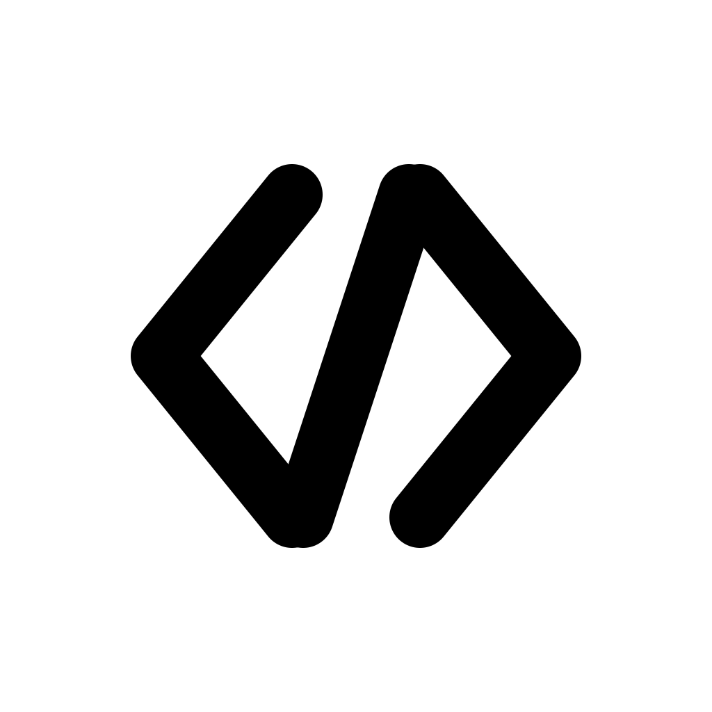
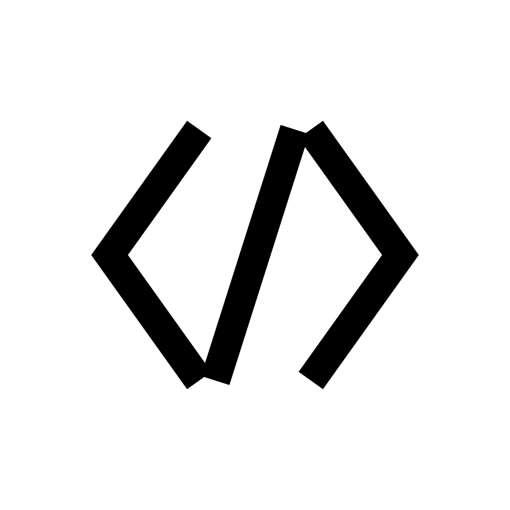
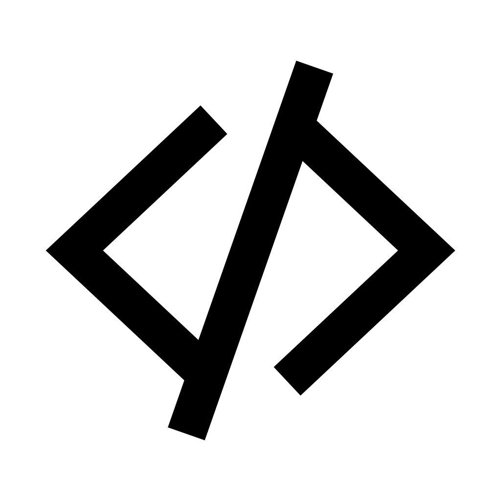
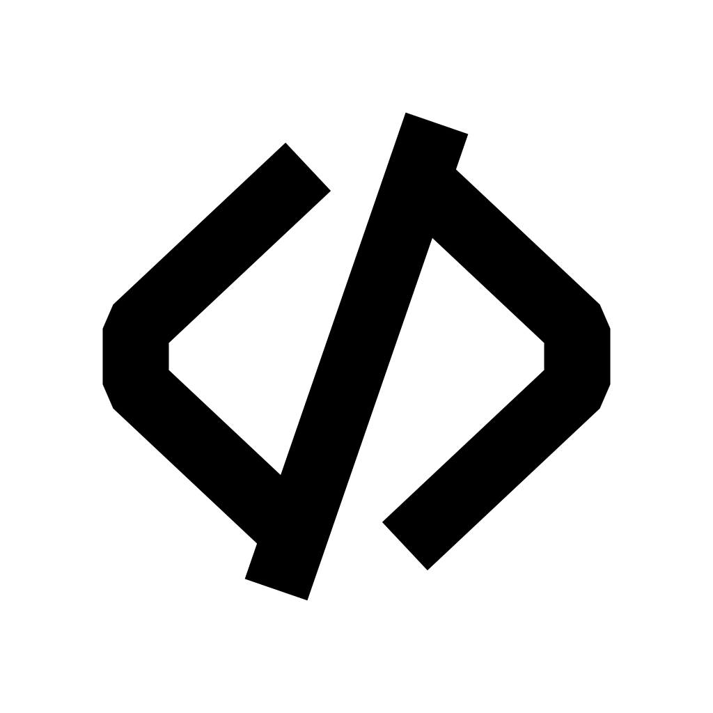
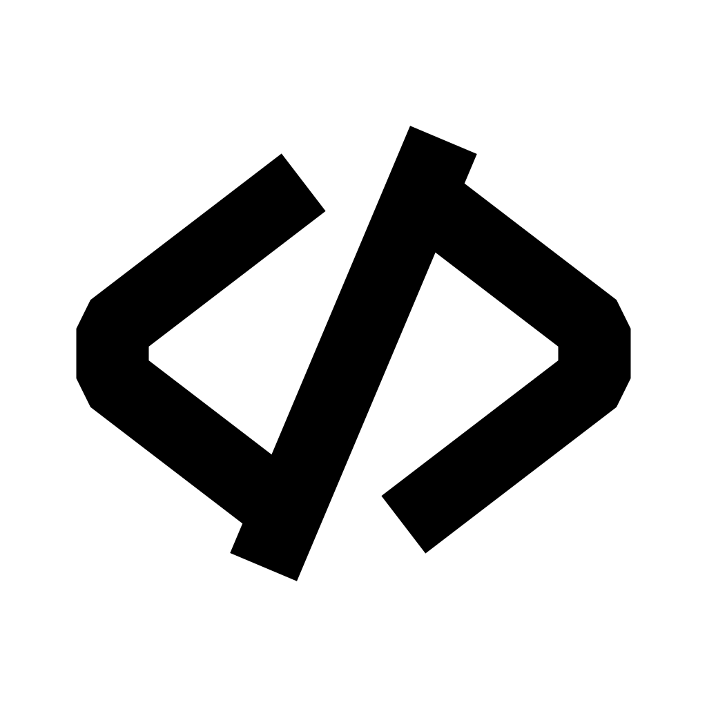
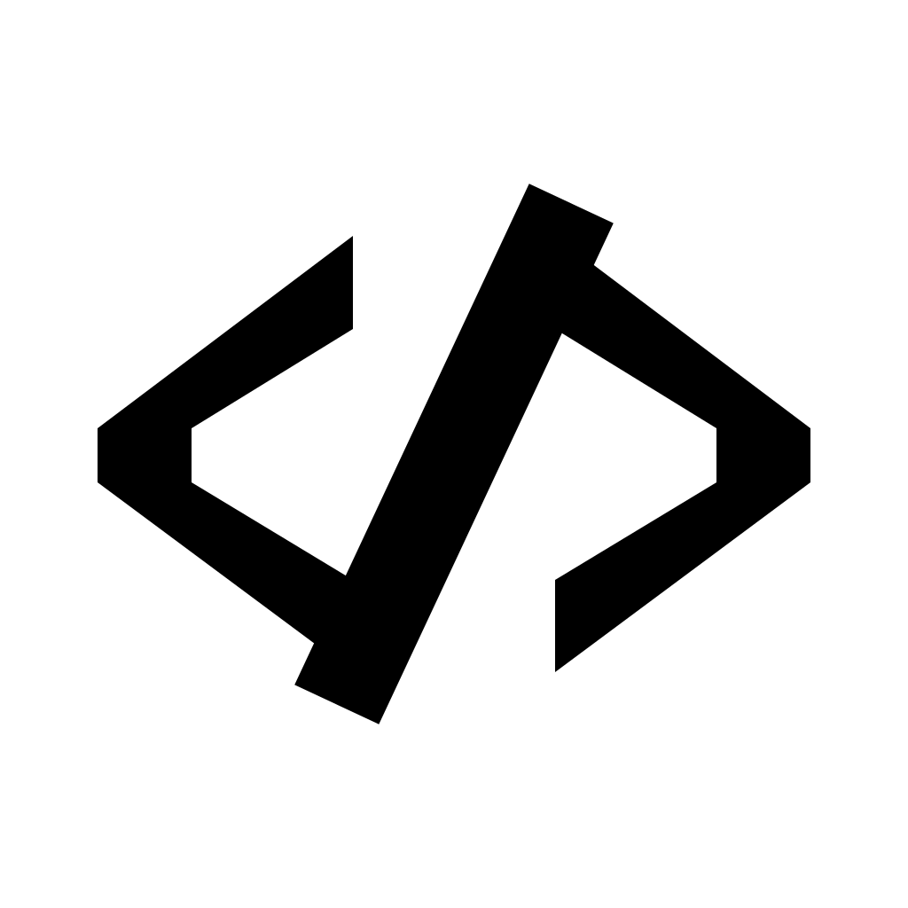

Same </> glyph family — caps, joins, and proportions vary.
Square corners shown (iOS will round them); dark-mode strip simulates a black home screen.
Variant C v5 at the bottom is the current direction: chevrons as filled polygons with axis-aligned square arm tips and sharp 90° corners at the back, plus an extra 10% vertical squish.
Heavy stroke (88px), rounded caps and joins, compact arrangement. Closest descendant of the source photo. Confident, mobile-app-ready.

Medium stroke (60px), butt caps and miter joins. Engineering/Xcode feel — precise rather than friendly.

Heavy stroke (80px), rounded caps, but brackets stretched outward — feels like an HTML tag glyph more than a typographic ligature. Web-developer-tool vibe.
Iteration on C: squared caps + miter joins on the chevrons (sharper, more architectural — no rounded softness), and the slash extends past the top & bottom of the chevron tips. More HTML-tag, less typographic.

Chevron back is a flat vertical segment (not a point). Slash protrudes ~30px past chevron tips on each end. Heavier stroke (95) for presence at small sizes.

v3 transformed: horizontal +10%, vertical −10%, stroke 95 → 105. More tag-like proportions, heavier presence.

Chevrons drawn as filled polygons: arm tips now have vertical (axis-aligned) right faces, back corners are sharp 90° (no bevel). Another 10% vertical squish on top of v4.
